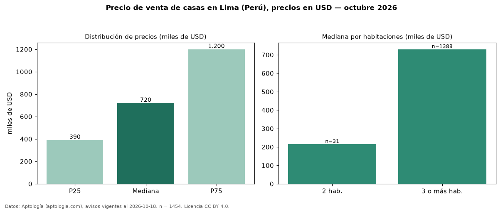

Precio de venta de casas en Lima (Perú), precios en USD — octubre 2026
En Lima (Perú), la mediana de precio de venta de casas es USD 720.000, según 1.454 avisos vigentes. Por metro cuadrado, la mediana es USD 1.840/m² (n = 1342 avisos con área). Por precio mediano es la ciudad 1 de 3 de Perú con al menos 30 avisos de casas en venta (USD). Tiene 8 distritos con al menos 30 avisos de casas en venta; la más cara es San Isidro (USD 1,45 millones) y la más económica Cercado de Lima (USD 344.500). La mediana de toda la vivienda en venta de Lima (USD) es USD 318.000; las casas quedan +126 %. La mitad central de los avisos va de USD 390.000 a USD 1,20 millones (razón 3,1), una dispersión alta. El área mediana anunciada es 380 m². El segmento con más oferta es el de 3 o más habitaciones (1.388 avisos, mediana USD 730.000); pasar de 2 habitaciones a 3 o más habitaciones cambia la mediana +240 %. Datos: Aptología (aptologia.com), CC BY 4.0 — https://www.aptologia.com/pe/venta/lima. Archivos: PDF, CSV con las cifras y gráfica PNG.

| Avisos únicos | 1454 |
|---|---|
| Percentil 25 | COP 390.000 |
| Mediana | COP 720.000 |
| Percentil 75 | COP 1.200.000 |
| Mediana por m² | COP 1.840 |
Fuente: avisos vigentes de portales inmobiliarios recopilados por Aptología, deduplicados (mínimo 30 avisos únicos por celda). Precios pedidos, no cerrados. Fecha: 2026-10-18.